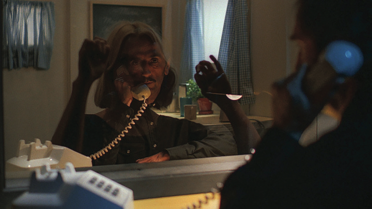
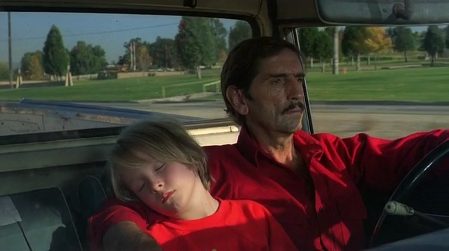

Dir. Wim Wenders • 1984 • Cast: Harry Dean Stanton, Nastassja Kinski, Dean Stockwell
This past weekend I got to see a screening of Wim Wenders' film Paris, Texas. It has been on my mind ever since Travis drove into the sunset.
There is a shot, early in the film, where the main character Travis Henderson, gaunt, sunburned, mute, walks across the searing Mojave Desert in a red baseball cap, as if he has simply decided to walk until the earth beneath his feet runs out. We don't really know where he came from or where he's going, and neither, it seems, does he. That image, spare and enormous, sets the terms of everything that follows: this is a film about people who have gotten so lost inside themselves that they've forgotten how to exist near anyone else.
The film is, on its surface, a road movie and family reunion story. Travis is found by his brother Walt, brought back into civilization, and slowly reintroduced to his young son Hunter, or "Untuh" as Walt's wife Anne may say. Against the backdrop of a thriving Los Angeles where Walt runs his billboard business, Travis engages in a gentle, awkward reconciliation with his son, who has been living with Walt and Anne since Travis disappeared four years ago. The reunion between Travis and Hunter is not warm in any conventional sense. It is like two humans encountering each other for the first time, each arriving with no prior knowledge that another person like this existed in the world. Slowly, they learn to be in the same room, to communicate, and what I felt most poignantly, to walk on the same side of the road together. As their paternal bond begins to thrive again, there seems to be a piece missing: Jane.
The gentle reconciliation eventually becomes something more urgent: a road trip south, a father and son who are still mostly strangers to one another, pointed toward Texas in search of Hunter's mother, who has been absent even longer than Travis has.
Wenders and cinematographer Robby Müller shoot the American Southwest with a kind of reverent alienation. The rich vistas of endless highways, standalone roadside motels, billboards, and heat shimmering off blacktop are rendered as something simultaneously beautiful and hostile. These are not postcards. The landscapes feel like manifestations of Travis' psychological state: all that open space, and nowhere to put yourself. Los Angeles is fluorescent and grid-like, pulsating with exuberance and commerce. The Texas roads are vast and indifferent, the sky too large, the horizon always receding just ahead of you. The film understands that America's open spaces can feel less like freedom and more like exposure.
Running underneath all of it is Ry Cooder's masterful, twangy score. A slide guitar that sounds like it is grieving, like it is reaching for something it cannot quite hold, smoke slipping through your fingers. It never overwhelms a scene nor tells you how to feel. It moves beneath everything like a slow current, surfacing in the quiet moments, in the long, wide shots of fading daylight. It represents what cannot be said: something irreplaceable that has been lost, and that loss has a specific, aching texture that no one has quite found the words for yet, nor has Travis.
Those words, when they finally come, arrive in the film's shattering final act. Travis tracks Jane down to a peep show parlor in Houston, and what follows is what I believe to be one of the greatest scenes ever filmed. The two of them are separated by a one-way mirror and connected purely by a telephone receiver, speaking first cautiously, then openly, and devastatingly. Travis cannot bring himself to look at her directly. He turns away from the glass and speaks to her reflection as he recounts their story. We watch as Jane slowly realizes who is beyond the mirror.
Sam Shepard's screenplay, which carries a plainspoken, wounded poetry throughout, reaches its peak here. Jane describes her love and her longing in language that is simple and unbearable: that she used to make up speeches to him, whole monologues composed in her head for a man she couldn't speak to in person. And then she turns to something even more painful: that she missed Hunter so much she couldn't even bear imagining him, because to imagine would be to come undone. It is one of the most precise things ever written about a particular kind of grief, the grief where you protect yourself from the thought of someone not by forgetting them or hating them, but by refusing to let them exist even in your own mind, because the love is too enormous and too dangerous to look at directly.
Harry Dean Stanton (Travis) carries the whole film on a performance built almost entirely out of silence, out of avoidance, out of small, hard-won gestures. Travis is not sympathetic in any easy way, and the film never moves to excuse him. But Stanton makes his damage legible, makes his love for his son feel real and earned, and makes the decision to reunite Hunter with Jane and then vanish once more feel not like nobility but like the only honest thing a man like him knows how to do. His grief stands in the way of him being able to truly accept his role as Hunter's father, and the only way to get to something buried this deep is for him to go to where he was conceived: Paris, Texas.
Please watch this movie.
GALLERY
